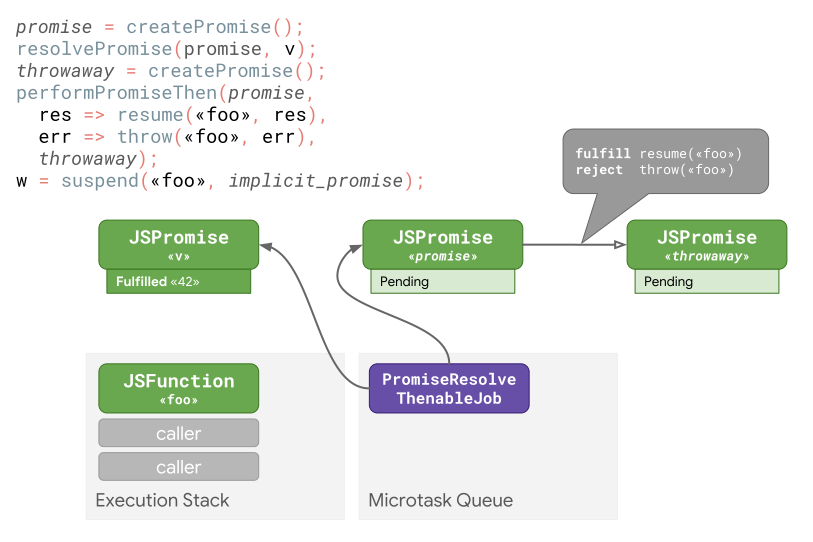

[Javascript] async/await 알아보기 (w. V8 Engine, task, microtask)
서론
CS 스터디에서 9월 10일에 발표한 async function과 await 키워드에 대해 정리한 문서를 블로그에 공유하고자 한다.
async function - await는 어떻게 동작할까?
async/await란?
async function이란, 여러 Promise간의 흐름을 순서대로 처리할 수 있는, 즉 여러 비동기 함수들을 동기적인 순서로 진행할 수 있는 함수를 말합니다.
async function은 0개 이상의 await 키워드를 포함할 수 있는데, 함수를 진행하다 await가 달린 Promise를 만나게 되면 해당 Promise가 이행/거부될 때 까지 함수 실행을 일시 중단 하며 처리가 완료된 뒤 다시 진행됩니다.
즉, Promise를 반환하는 함수를 동기식인 것처럼 동작하도록 해줍니다.
- 이는
await이후의 코드를Promise.then()콜백에서 수행하는 것과 거의 유사
// 일반 Promise와 callback 예시
function getProcessedData(url) {
return downloadData(url) // returns a promise
.catch((e) => downloadFallbackData(url)) // returns a promise
.then((v) => processDataInWorker(v)); // returns a promise
}
// 위 예시를 async function - await로 변환한 예시
async function getProcessedData(url) {
let v;
try {
v = await downloadData(url);
} catch (e) {
v = await downloadFallbackData(url);
}
return processDataInWorker(v);
}
또한, async function은 항상 Promise를 반환하며, 만약 Promise가 아닌 값을 반환(심지어 아무것도 return하지 않아도!)하는 경우 암시적으로 Promise로 래핑되어 반환됩니다.
// Promise가 아닌 값을 반환하는 경우
const abc = async () => 1;
abc(); // Promise {<fulfilled>: 1}
// 아무것도 반환하지 않는 경우
const none = async () => {};
none(); // Promise {<fulfilled>: undefined}
async/await의 특징
어떠한 값이든 await 할 수 있음
웬만한 경우, Promise 앞에 await 키워드를 붙여 비동기 작업의 결과를 기다리도록 합니다.
하지만 실제로는 어떠한 Javascript 값이든 기다리게 할 수 있습니다.
만약 await 키워드 뒤에 오는 표현식의 값이 Promise가 아닌 경우, 이를 Promise로 변환합니다.
예를들어, 25와 같은 아무런 숫자도 await를 붙일 수 있는 것입니다.
async function foo() {
const v = await 25;
return v;
}
const p = foo();
// → Promise
p.then(console.log);
// `25`를 출력한다.
await 은 어떠한 thenable 객체와도 정상 동작함
await 키워드는 어떤 객체든 then 메서드만 있다면 꼭 Promise가 아니어도 잘 동작하게 됩니다.
class Sleep {
constructor(timeout) {
this.timeout = timeout;
}
then(resolve, reject) {
const startTime = Date.now();
setTimeout(() => resolve(Date.now() - startTime),
this.timeout);
}
}
(async () => {
const actualTime = await new Sleep(1000);
console.log(actualTime);
})();
async function 내부의 await 동작
async function은 일반 함수처럼 진행되다가, await 키워드가 달린 Promise를 만나게 될 경우, 해당 Promise가 resolve(또는 reject)될 때까지 async function의 실행을 일시 중단합니다.
이때, Javascript의 논-블로킹 특성상, await 키워드로 인해 함수 실행이 멈추더라도 다른 연산들은 백그라운드에서 계속 진행됩니다.
이는 콜백 vs async 에서 언급한 것처럼, Javascript에서는 코드 실행을 수행하는 메인 스레드 뿐만 아니라, 타이머 기반 작업, 네트워크 요청 등의 비동기 작업을 처리하는 Web API를 사용하기 때문입니다.
즉, 만약 상기한 비동기 작업을 마주한다 해도 메인 스레드는 이를 직접 처리하지 않고 Web API에게 이를 전달합니다. 따라서 해당 작업이 완료되길 기다리지 않고 이어지는 코드들을 계속 실행하게 됩니다.
그렇다면 async/await는 진짜 동기적으로 동작할까?
let t1 = new Promise((resolve) => {
setTimeout(() => resolve('첫 번째 타이머'), 10000);
});
let t2 = new Promise((resolve) => {
setTimeout(() => resolve('두 번째 타이머'), 10000);
});
코드 1
위처럼 각각 10초 이후 문자열을 resolve하는 타이머 t1, t2를 예로 들어보겠습니다.
만약 이 둘을 async function 내부에서 await를 달아주면 어떻게 동작할까요?
10초짜리 타이머 2개가 동기적으로 호출될 것이니, 20초가 소요될까요?
async function test() {
console.log("시작");
let t1 = new Promise((resolve) => {
setTimeout(() => resolve('첫 번째 타이머'), 10000);
});
let t2 = new Promise((resolve) => {
setTimeout(() => resolve('두 번째 타이머'), 10000);
});
let startTime = Date.now();
let result1 = await t1;
console.log("T1에 소요된 시간 : ", Date.now() - startTime, "ms");
let result2 = await t2;
console.log("T2에 소요된 시간 : ", Date.now() - startTime, "ms");
console.log("끝");
}
test(); // ?
코드 2

하지만, 실제로는 두 타이머 작업을 수행하는데에 총 10초밖에 들지 않았습니다.
그렇다면 작업이 동기적으로 수행되지 않은 걸까요?
이를 이해하려면 Javascript Event Loop 내부 동작이 어떻게 수행되는지 알아야 합니다.
Event Loop 내부의 async/await 동작
간단하게 설명하면, Event Loop는 Javascript 코드를 한 줄 한 줄 실행하면서, 지속적으로 메시지 큐에 보류(Pending)중인 메시지(ex. resolve된 Promise)를 확인하며 하나 하나 처리합니다.
즉, t1, t2를 초기화하는 코드 1 코드를 메인 스레드가 읽고 실행한 순간, 백그라운드에서 해당 타이머 작업은 Web API에게 전달되어 실행되고 있는 것입니다.
Promise()의 첫 번째 인자로 주어진 함수는 즉시 실행됩니다.
따라서 t1, t2는 백그라운드에서 동시에 실행되고 있으며, 메인 스레드는 이후 이어지는 코드(코드 2)들을 계속 실행해나갑니다.
그리고 test() 내부의 await t1에 도달했을 때, t1이 resolve될 때 까지 기다렸다가 코드 진행을 계속 이어나갑니다.
t1과 t2 모두 10초짜리 타이머이므로, t1이 완료됨과 거의 동시에 t2도 완료되게 됩니다. 따라서 await t2는 거의 기다리지 않고 이후 코드들이 즉시 실행되게 됩니다.
let t1 = new Promise((resolve) => {
setTimeout(() => resolve('첫 번째 타이머'), 10000);
});
let t2 = new Promise((resolve) => {
setTimeout(() => resolve('두 번째 타이머'), 5000);
});
만약 t2를 5초로 줄이더라도, 백그라운드에서는 t2가 t1보다 먼저 완료되지만 test() 함수의 동작은 이전과 동일하게 작동합니다.
async/await을 사용하면, 비동기 병렬 처리가 불가능한가요?
그렇지 않습니다. Promise의 all 또는 allSettled 함수를 통해 await 키워드를 사용하면서 비동기 작업들을 병렬적으로 처리할 수 있습니다.
async function fetchData() {
const userDataPromise = fetchUserData();
const productDataPromise = fetchProductData();
try {
const [userData, productData] = await Promise.all([userDataPromise, productDataPromise]);
console.log("User data:", userData);
console.log("Product data:", productData);
}catch (error) {
console.error("Error fetching data:", error);
}
}
위 코드처럼, 병렬로 실행할 비동기 작업(Promise)들을 배열(또는 Iterable 객체)에 담아 all 또는 allSettled에 넘겨주면 이들을 병렬적으로 수행하게 됩니다.
이후 배열의 모든 비동기 작업이 완료되면 코드 진행을 이어나갑니다.
V8 엔진에서의 내부 await 동작 과정 #
async function foo(v) {
const w = await v;
return w;
}
위와 같은 함수를 실행한다고 할 때, V8 엔진 내부에서는 아래와 같이 처리가 이뤄집니다.

- V8 엔진이
async function을resumable(await위치에서 함수 실행을 중단하고 재개할 수 있음을 뜻함)하다고 표시합니다.- 그런 다음
implicit_promise(async function을 호출할 때 반환되며, 최종적으로async function이 생성한 값을resolve하는Promise)를 생성합니다.
- 그런 다음
await에 전달된 값(여기서는v)을Promise로 래핑합니다.- 만약
Promise가이행(fulfilled)되면async function을재개하도록 하는핸들러를 래핑된Promise에 연결합니다. async function의 실행을일시 중단(suspend)한 뒤, 호출자에게implicit_promise를 반환합니다.- 이후
Promise가 이행된 경우,Promise의 값w와 함께async function이 재개되고implicit_promise는w를resolve합니다.
- 이후
자세히 살펴보기
위 과정을 하나 하나 살펴보겠습니다.
참고로 위 예시에서 await한 표현식이 42라는 값으로 이행된 Promise라고 가정하겠습니다.

엔진은 이 await된 값을 promise라는 Promise로 래핑합니다.
이는 다음 차례에 Promise들의 지연된 연쇄(deferred chaining)를 수행합니다.
ECMA 사양에서는 이를PromiseResolveThenableJob이라고 부릅니다.
이후 엔진은 아무것도 체인으로 연결 되어있지 않고, 완전히 엔진 내부에 존재하는 throwaway라는 Promise를 생성합니다.
이 throwaway는 async function을 재개하기 위한 적절한 핸들러와 함께 promise와 체이닝됩니다.
performPromiseThen은 Promise.prototype.then()이 뒤에서 실제로 수행하는 일이며, 마지막으로 async function의 실행이 일시 중단되고 제어권은 호출자에게 반환됩니다.
 호출자측에서 작업이 계속 이어지고, 끝내
호출자측에서 작업이 계속 이어지고, 끝내 콜 스택이 비워지게 됩니다.
이후 Javascript 엔진은 microtask들을 실행하기 시작합니다.
microtask(또는job):I/O,타이머작업과 같이 한 번에 하나씩 실행되는 비동기 작업인task들이 끝날 때 실행되며,async/await및Promise에 대한지연 실행(Task가 완전히 끝난 후에만 실행됨)을 구현하는 작업.ES6에서Promise가 등장함에 따라 함께 추가 됨.
즉, 이전에 예약해두었던 PromiseResolveThenableJob을 실행하게 되는데 이는 promise와 await에 전달된 값(여기서는 42)을 체이닝하기 위한 PromiseReactionJob을 예약합니다.
 이어서
이어서 await한 Promise(v)의 값으로 promise를 이행하고, throwaway에 대한 반응(reaction) 작업(또다른 PromiseReactionJob)을 예약하는 PromiseReactionJob을 수행합니다.

이어지는 두 번째 PromiseReactionJob(throwaway에 대한 반응)은 resolve된 값(42)을 throwaway에 전파하고, 일시 중지 되었던 async function의 실행 재개해, await에서 42라는 값을 반환합니다.
async/await 작업의 최적화
원인
자세히 살펴본 위 작업 과정에 따르면, 각 await에 대해 JS 엔진은 두 개의 추가 Promise, 그리고 최소 3개의 Microtask가 필요하게 됩니다.
이 중, 하나의 Promise와 2개의 Microtask는 위 코드의 맨 위의 두 줄의 코드에 의해 발생합니다.
promise = createPromise();
resolvePromise(promise, v);
이는 심지어 v가 이미 Promise여도 수행되기 때문에, v가 Promise인 경우 상당히 비싼 오버헤드를 발생시킬 수 있습니다.
해결
사실 ECMA 사양에는 이미 필요할 때만 Promise로의 래핑을 수행하는 promiseResolve라는 작업이 존재합니다.

즉, 위 두 줄을 promise = promiseResolve(v) 단 한 줄로 변경하게 되면, promise에는 아무런 변화도 없으며 오직 필요할 경우에만 Promise로 래핑하게 됩니다.
이렇게 하면 이전의 코드에서 throwaway를 생성하고, 이를 v와 체이닝하는 PromiseReactionJob을 예약하는 작업 정도만 남게 됩니다.
또한, throwaway는 performPromiseThen 의 API 제약 조건을 충족하기 위해서 존재하는데, ECMA 사양의 변경으로 더 이상 웬만해서는 await을 위해 throwaway를 생성할 필요가 없어졌습니다.